These have results per 1-second interval for: insert rate (IPS), max insert reponse time, delete rate (DPS), max delete response time, query rate (QPS) and max query response time.
The results are from 1 client while the test may have N clients where N > 1.
Deletes might not have been enabled for this benchmark step, in which case those graphs will show zero values.
The test is run with a rate limit for the number of inserts/s. In some cases the DBMS is unable to sustain that rate. When a DBMS can sustain that rate IPS will be a horizontal line.
Contents
- my5651_rel_native_lto.cy10_u: IPS, max insert response time, DPS, max delete response time, QPS and max query response time
- my5651_rel_native_lto.cy10_ua1: IPS, max insert response time, DPS, max delete response time, QPS and max query response time
- my5651_rel_native_lto.cy10_ua2: IPS, max insert response time, DPS, max delete response time, QPS and max query response time
my5651_rel_native_lto.cy10_u: IPS
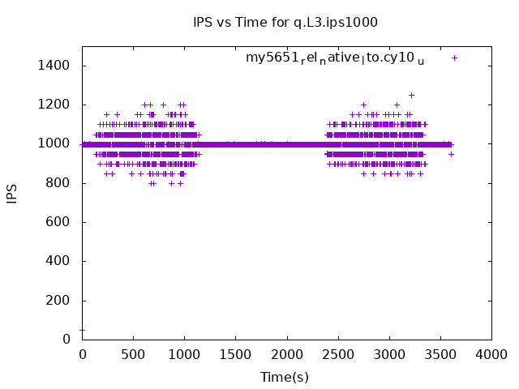my5651_rel_native_lto.cy10_u
my5651_rel_native_lto.cy10_u: max insert response time
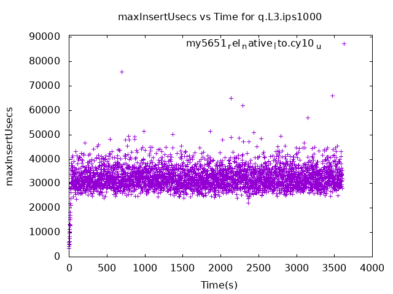my5651_rel_native_lto.cy10_u
my5651_rel_native_lto.cy10_u: DPS
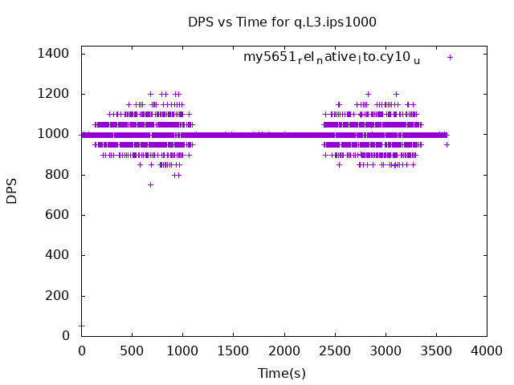my5651_rel_native_lto.cy10_u
my5651_rel_native_lto.cy10_u: max delete response time
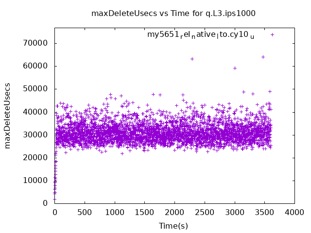my5651_rel_native_lto.cy10_u
my5651_rel_native_lto.cy10_u: QPS
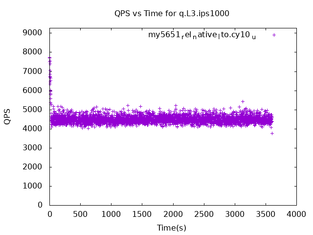my5651_rel_native_lto.cy10_u
my5651_rel_native_lto.cy10_u: max query response time
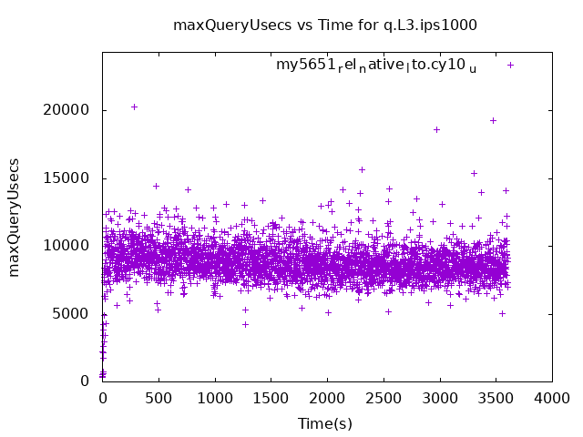my5651_rel_native_lto.cy10_u
my5651_rel_native_lto.cy10_ua1: IPS
my5651_rel_native_lto.cy10_ua1
my5651_rel_native_lto.cy10_ua1: max insert response time
 my5651_rel_native_lto.cy10_ua1
my5651_rel_native_lto.cy10_ua1
my5651_rel_native_lto.cy10_ua1: DPS
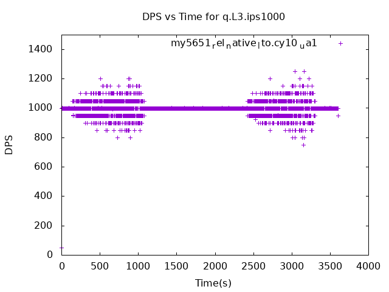my5651_rel_native_lto.cy10_ua1
my5651_rel_native_lto.cy10_ua1: max delete response time
 my5651_rel_native_lto.cy10_ua1
my5651_rel_native_lto.cy10_ua1
my5651_rel_native_lto.cy10_ua1: QPS
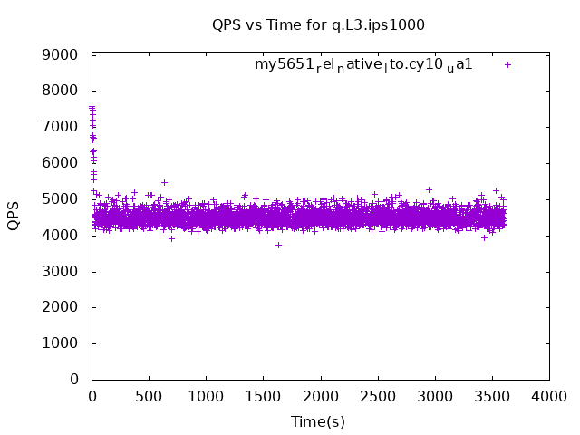my5651_rel_native_lto.cy10_ua1
my5651_rel_native_lto.cy10_ua1: max query response time
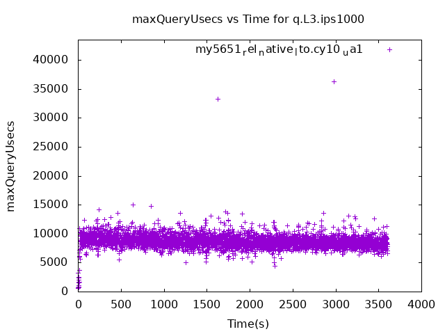my5651_rel_native_lto.cy10_ua1
my5651_rel_native_lto.cy10_ua2: IPS
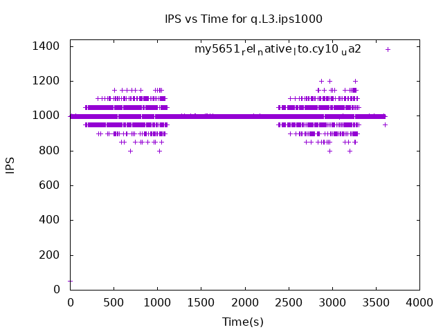my5651_rel_native_lto.cy10_ua2
my5651_rel_native_lto.cy10_ua2: max insert response time
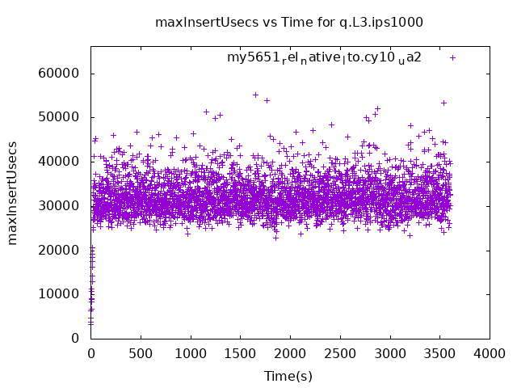my5651_rel_native_lto.cy10_ua2
my5651_rel_native_lto.cy10_ua2: DPS
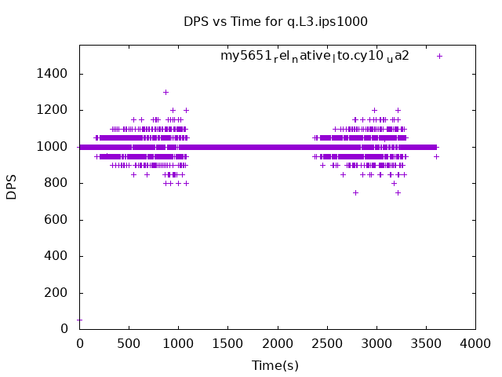my5651_rel_native_lto.cy10_ua2
my5651_rel_native_lto.cy10_ua2: max delete response time
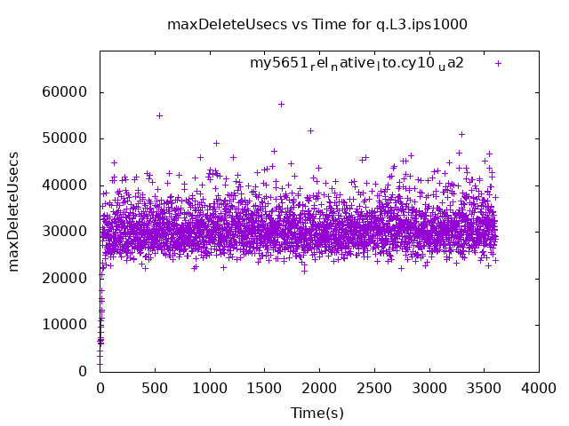my5651_rel_native_lto.cy10_ua2
my5651_rel_native_lto.cy10_ua2: QPS
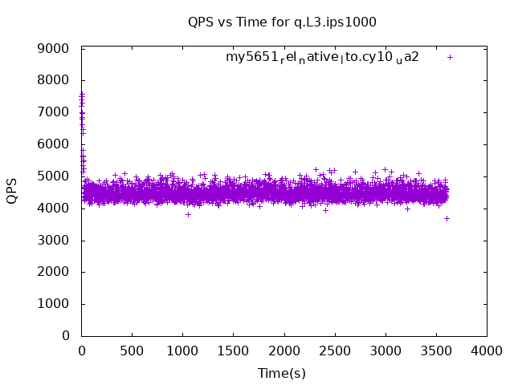my5651_rel_native_lto.cy10_ua2
my5651_rel_native_lto.cy10_ua2: max query response time
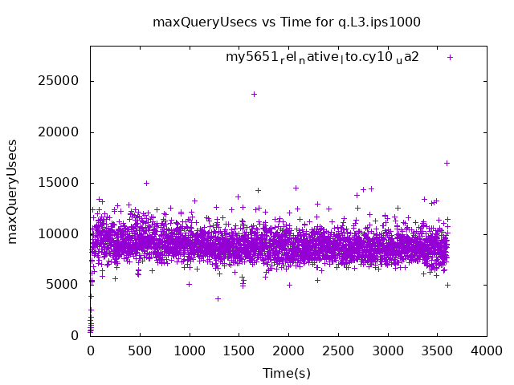my5651_rel_native_lto.cy10_ua2